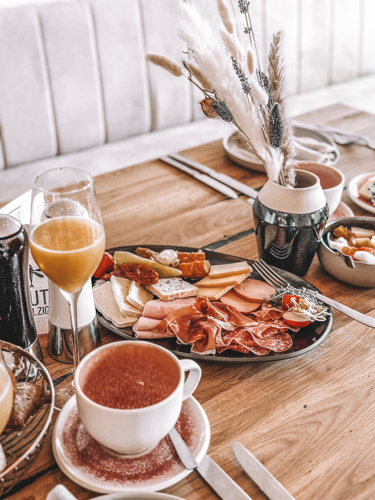

Gut Salzig Klassik
Brot · Käse · Schinken · Ei — 14 €

Samstags gemütliches Frühstück à la carte. Sonntags unser großer Brunch mit wöchentlich wechselndem Menü, frisch gebackenem Brot, Fisch, Käse und vielen Kleinigkeiten zum Probieren.
Wir haben das Wochenende in zwei Geschwindigkeiten aufgeteilt — einen ruhigen Samstag-Morgen und einen ausgiebigen Sonntags-Brunch. Beides lässt sich zur Reservierung anmelden.
Jeden Sonntag kuratieren wir ein neues Brunch-Menü. Frisch gebackenes Brot aus der eigenen Küche, Fisch vom heimischen Kutter, regionale Käse, Süßes und Herzhaftes — alles zum ausgiebigen Probieren.
Platz reservieren →
Gemütlicher Start ins Wochenende. Entspannte Atmosphäre, langsames Tempo — für alle, die den Tisch lieber für sich haben statt sich am Buffet einzureihen.
Brot · Käse · Schinken · Ei — 14 €

Joghurt · Granola · Obst · Honig — 12 €

Lachs · Krabben · Avocado · Rührei — 22 €
Ja, wir empfehlen unbedingt eine Reservierung — besonders für den Sonntagsbrunch. Die Plätze sind schnell vergeben, vor allem in der Saison.
So lange du magst! Beim Brunch planen wir ca. 2 Stunden pro Tisch ein, aber wenn es nicht voll ist, freuen wir uns über jede Minute mehr.
Absolut. Wir haben Hochstühle, kindgerechte Portionen und im Sommer Sandkasten & Spielzeug am Strand. Kinder bis 6 Jahre brunchen gratis.